Diseño de métodos de cuantificación aplicados a la estimación de la distribución de grupos taxonómicos presentes en muestras de plancton
Pablo González González
Dr. Juan José Del Coz
Dr. Jorge Díez
Doctorado en Informática, Universidad de Oviedo, 2019
Introducción
Desarrollo de técnicas y métodos adecuados para cuantificar muestras de plancton descritas a partir de imágenes capturadas por dispositivos automáticos
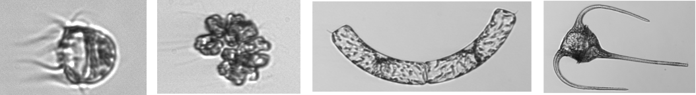¿En qué consiste cuantificar?
El objetivo es procesar una muestra de plancton y obtener la distribución de los organismos existentes en ella
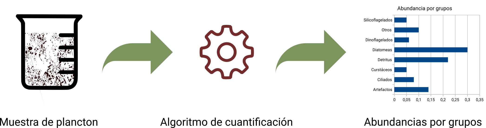Fases del proceso
Para poder construir un modelo de cuantificación, tendremos que completar las siguientes fases
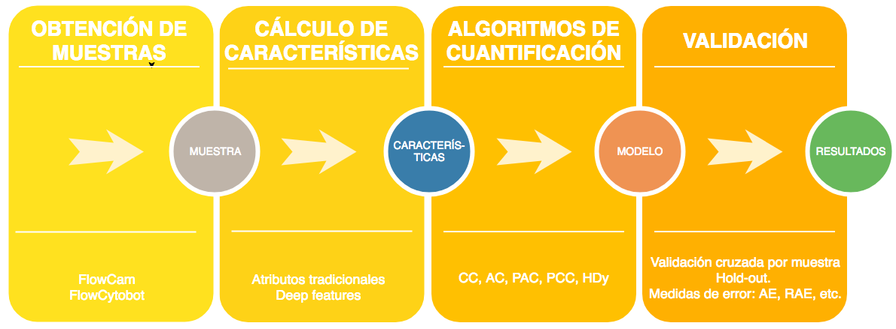Fase 1
Obtención de muestras
Conjuntos de datos utilizados
- Conjunto de datos del Instituto Oceanográfico de Gijón
- Conjunto de datos del Woods Hole Oceanographic Institution

Conjunto de datos del Instituto Oceanográfico de Gijón
- Muestras obtenidas en
diferentes localizaciones del Mar Cantábrico - Formado por
60 muestras y unas40.000 imágenes etiquetadas manualmente en8 categorías
Conjunto de datos del Woods Hole Oceanographic Institution
Formado por 964 muestras y 3.4 millones de imágenes etiquetadas manualmente en 50 categorías
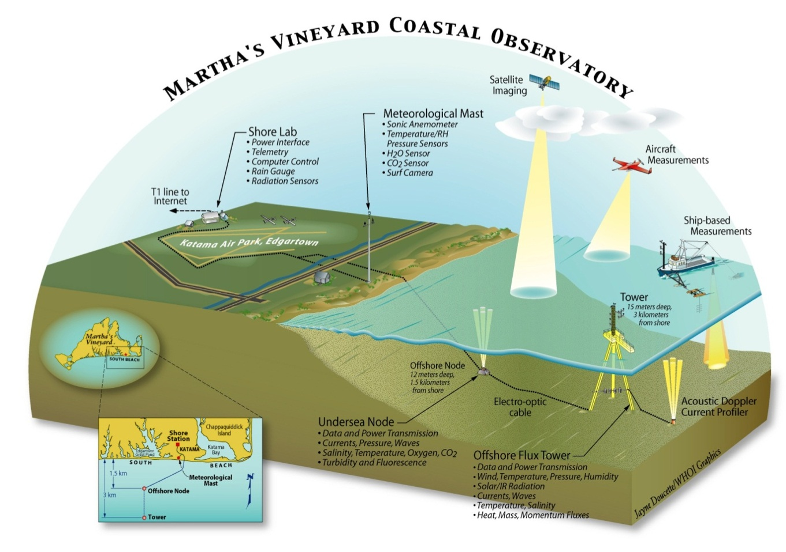Dispositivos de captura utilizados para obtener las imágenes
Concepto de muestra
Una muestra es el conjunto de especímenes de plancton fotografiados por un dispositivo de captura en un lugar y momento determinados
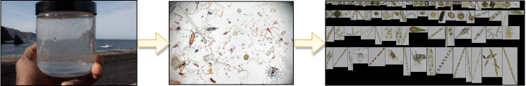Ejemplo de la variabilidad de cada muestra (IEO)
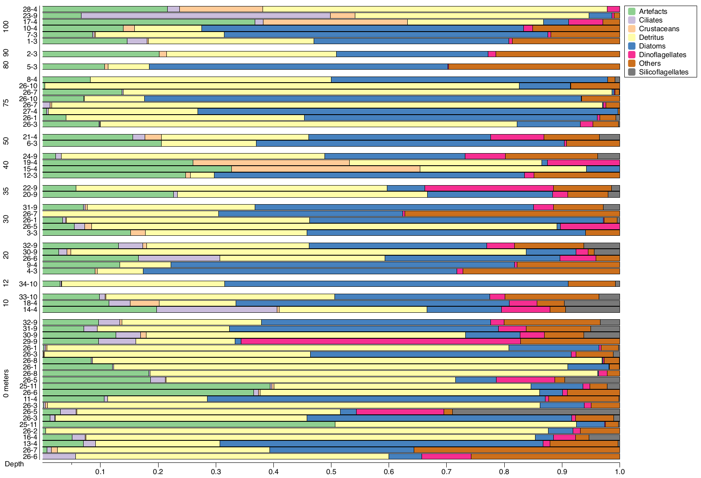Ejemplo de la variabilidad de cada muestra (WHOI)
Prevalencia de la clase Cerataulina
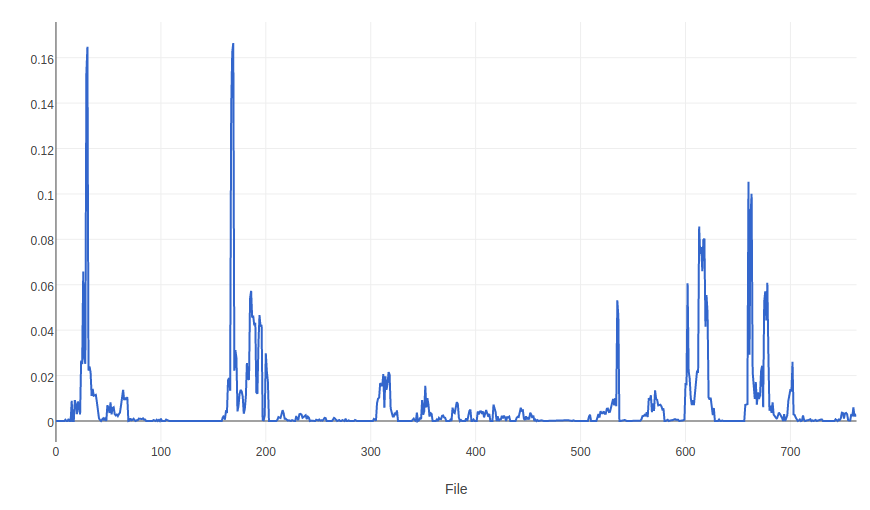Dificultades que presentan ambos conjuntos
- Grandes
cambios en la distribución de muestra a muestra Dificultad para reconocer cada una de las especies por parte de los expertos- Diferentes
subespecies en cada una de las categorías Calidad de las imágenes
Fase 2
Cálculo de características
Enfoques utilizados
- Características tradicionales (forma y textura)
- Características computadas usando una CNN
Características tradicionales
Pertenecientes al campo de la
Algunos ejemplos son los siguientes:
- Descriptores de forma (Fourier)
- Momentos invariantes (Hu)
- Atributos de textura (Haralick)
Características computadas por una CNN
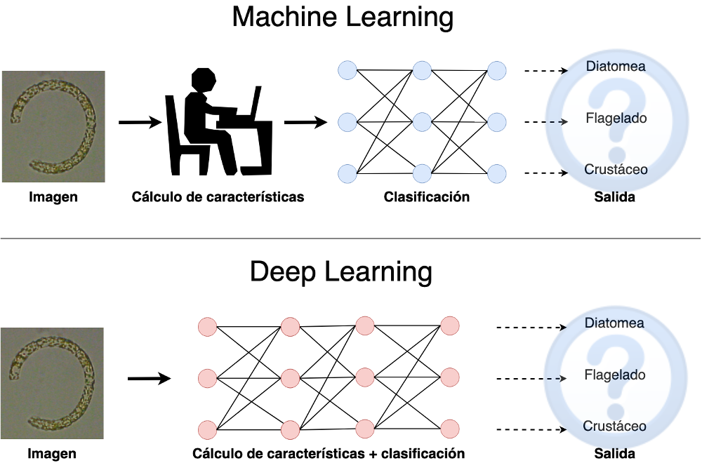¿Como funciona una CNN?
La propia red es capaz de aprender a representar las imágenes
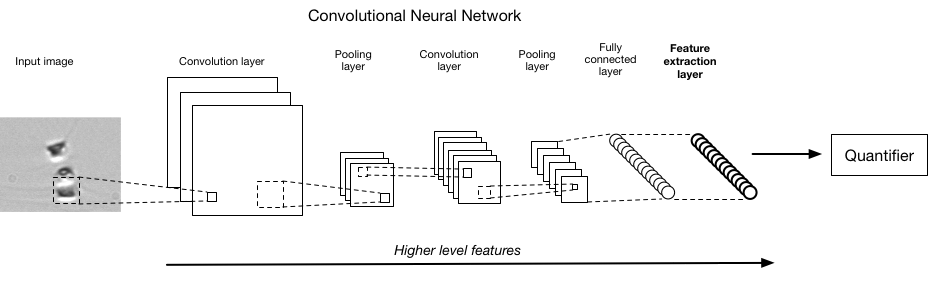¿Por qué son interesantes las CNNs para nuestro problema?
- Muy buenas para la clasificación de imágenes
- Posibilidad de utilizarlas para computar características de imágenes
- Posibilidad de utilizar redes preentrenadas y adaptarlas a nuestro problema
Arquitecturas de CNNs
Una de las primeras CNN fue AlexNet en 2012 (8 capas)
A partir de ahí han aparecido redes más prufundas como VGG (19 capas) o Inception (22 capas)
Cuanto más profundas son las redes cuesta más entrenarlas y los resultados empiezan a empeorar
CNNs más profundas
Las redes Resnet resuelven el problema añadiendo un enlace entre capas
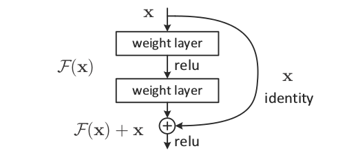Con esta arquitectura las Resnet pueden superar las 100 capas
¿Por qué elegimos las Resnet?
Ganadoras del concurso ImageNet en 2015 con un error del 3.6%
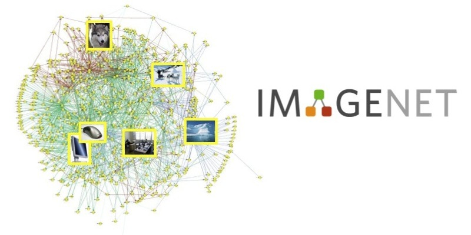Transfer Learning
“La aplicación de destrezas, conocimiento, y otras aptitudes que fueron aprendidas en una situación a otro problema de aprendizaje.” (Perkins, 1992)
Fine Tuning
Fase 3
Algoritmos de cuantificación
A Review on Quantification Learning
(ACM Computing Surveys, 2017)
Introducción a la cuantificación como problema con entidad propia dentro del campo de aprendizaje automático y revisión de los principales métodos hasta la fecha
¿Qué es cuantificar?
Cuantificar consiste en estimar la distribución de las clases en un conjunto de test, usando un conjunto de entrenamiento que puede tener una distribución diferente [Forman, 2008]
Dado un conjunto de datos $D=\{(x_1,y_1),...,(x_n,y_n)\}$
donde $x_i \in \mathcal{X}$ and $y_i \in \mathcal{Y}=\{c_1,...,c_l\}$
El objetivo es aprender un modelo tal que: $\bar{h}:Sample \longrightarrow [0,1]^l$, donde cada elemento de este vector es la prevalencia de cada clase $\hat{p}_{j}$ en una muestra desconocida.
¿Qué es cuantificar? (II)

Diferencias entre clasificación y cuantificación
Se puede observar que la formulación de ambos problemas es totalmente diferente
Clasificación
$h:\mathcal{X}\longrightarrow \{c_1,...,c_l\}$
Cuantificación
$\bar{h}: Sample \longrightarrow [0,1]^l$
Cambios en la distribución
El aprendizaje automático supervisado está basado en que los datos son independientes y están distribuidos de manera idéntica (
Esto supone que $P_{tr}(x,y)=P_{tst}(x,y)$
En los problemas de cuantificación lo anterior claramente no se cumple ya que al menos $P_{tr}(y)\neq P_{tst}(y)$
Dataset Shift [Moreno et al. 2012]
$P(x, y) = P(y|x)P(x)$ en problemas $X \longrightarrow Y$
$P(x, y) = P(x|y)P(y)$ en problemas $Y \longrightarrow X$
- covariate shift: $X → Y$, $P(x)$ cambia, $P(y|x)$ constante
- prior probability shift: $Y → X$ , $P(y)$ cambia, $P(x|y)$ constante
- concept shift: $X → Y$, $P(y|x)$ cambia, $P(x)$ constante; $Y → X$ , $P(x|y)$ cambia, $P(y)$ constante
La forma más sencilla de cuantificar
El método más sencillo para cuantificar es el método Clasificar y Contar (CC)
Este método
Un clasificador perfecto daría lugar a un cuantificador perfecto, pero en la realidad nunca obtenemos un clasificador perfecto
¿Por qué el método CC no es óptimo? [Forman, 2008]
Podemos escribir la probabilidad de que un clasificador binario prediga un ejemplo como positivo de la siguiente manera:
$\begin{align}\hat{p}_{CC}=&P(h(x)=+1|y=+1)\cdot P(y=+1)+
\\&P(h(x)=+1|y=-1)\cdot P(y=-1)\end{align}$
$\hat{p}_{CC}=tpr \cdot p + fpr \cdot (1-p)$
Si $tpr-fpr=1$ (clasificador perfecto, si $P(x|y)$ constante) $\implies \hat{p}_{CC}=p$
¿Por qué el método CC no es óptimo?

Algoritmos específicos para cuantificar
Los algoritmos utilizados en esta tesis han sido
Probabilistic CC [Bella et al. 2010]
PCC utiliza las salidas de un clasificador probabilistico para promediar la prevalencia de cada clase
$\hat{p}^{PCC}=\frac{1}{|T|}\sum_{x \in T} P(y = +1 | x)$
En realidad este algoritmo adolece de los mismos defectos que CC
Adjusted Count [Forman, 2008] y Probabilistic Adjusted Count [Bella et al., 2010]
AC y PAC utilizan una corrección basada en el $tpr$ y $fpr$ del clasificador
$\hat{p}^{AC}=\frac{\hat{p}^{CC}-fpr}{tpr-fpr}$
El ajuste se obtiene al despejar la prevalencia real de la expresión que hemos visto antes:
$\hat{p}_{CC}=tpr \cdot p + fpr \cdot (1-p)$
Sería un ajuste teóricamente perfecto si la estimación de $tpr$ y $fpr$ fuesen correctas
HDy [González-Castro et al. 2013] (I)
Método basado en la comparación de distribuciones utilizando la
HDy [González-Castro et al. 2013] (II)
La distancia de Hellinger en su forma discreta se puede calcular de la siguiente manera:
$HD(D',T)=\sqrt{\sum_{i=1}^{bins} \Big(\sqrt{ \frac{|D'_{i}|}{|D'|} } - \sqrt{ \frac{|T_{i}|}{|T|}}}\Big)^2$
Generamos conjuntos artificiales $D'$ variando $\hat{p}$ y hacemos una búsqueda lineal hasta encontrar el valor que minimiza la distancia anterior
Cuantificadores multiclase
Se utiliza un enfoque one-vs-all entrenando tantos cuantificadores binarios como clases tiene el problema
El resultado final se normaliza para que las prevalencias obtenidas sumen uno

Fase 4
Validación de resultados
Validation methods for plankton image classification systems
(Limnology and Oceanography: Methods, 2016)
Desarrollo de métodos de validación apropiados para problemas con grandes cambios en la distribución de sus muestras

Estrategia de validación
La unidad mínima para los experimentos es la
Es importante considerar la muestra tal y como viene del dispositivo de captura, sin ningún procesamiento manual posterior
Métodos de validación
- Validación cruzada por muestra dejando una fuera (
LOO por muestra ) cuando hay pocas muestras - División del conjunto en entrenamiento y prueba (
Hold-out ) cuando hay suficientes muestras
LOOCV
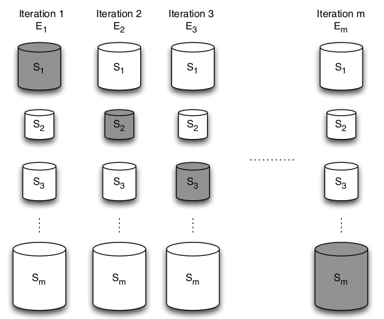Comparación entre una CV por individuo y por muestra
¿Por qué LOO por muestra obtiene peores resultados que una CV tradicional?
Otras maneras de ver los resultados
¿Por qué utilizar la muestra como unidad mínima?
- Se añade una
variabilidad real en los experimentos. - Se obtiene una
estimación más realista del rendimiento del modelo. - Nos permite un
análisis más detallado de los resultados y la posible detección de errores.
Automatic plankton quantification using deep features
(Journal of Plankton Research, 2019)
Uso de deep learning y transfer learning para cuantificar muestras de plancton
Hold-out por muestra
En este caso el conjunto de muestras era suficiente como para utilizar un Hold-out por muestra como estrategia de validación
Medidas de error
Las medidas de error utilizadas tienen que ser específicas para el problema de cuantificación
Error absoluto medio (MAE)
$MAE(c_{j})=\frac{1}{m} \sum_{s=1}^{m} | p_{j,s} - \hat{p}_{j,s} |$
Valor fácilmente interpretable en el rango [0,1]
Error absoluto relativo medio (MRAE)
$MRAE(c_{j})=\frac{1}{m} \sum_{s=1}^{m} \frac{\epsilon+|p_{j,s} - \hat{p}_{j,s}|}{\epsilon + p_{j,s}}$
Resultados para el conjunto WHOI-Plankton
Resultados para el conjunto WHOI-Plankton (II)
Resultados para el conjunto WHOI-Plankton (III)

Conclusiones
- Analizar el funcionamiento de los métodos de cuantificación en un problema real como es el plankton
- Definir una estrategia de validación sólida extrapolable a otros problemas de cuantificación
- Combinar los avances en el campo de la visión artificial (CNNs) con las técnicas de cuantificación
Difusión y reproducibilidad de los resultados
Los resultados de esta tesis han sido publicados en tres revistas indexadas de reconocido prestigio
Con el fin de garantizar la reproducibilidad de los resultados:
- Se ha creado una cuenta de GitHub con todo el código necesario para repetir los experimentos
- Todas las herramientas utilizadas para los experimentos son Open Source